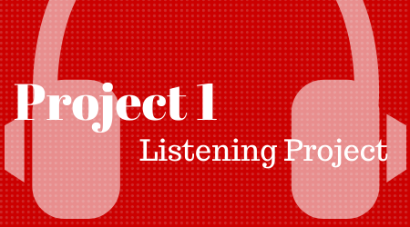

The object of this project is for you to research the various streaming music options available today, investigate the various features, and report back your findings and opinions as an audio file.
Please do not spend money or sign up for premium accounts for this project. Please utilize the free accounts and free services only.
Choose three to five songs that are available on the services you are evaluating. Listen each song on each service separately.
Please use free accounts only!!!
ACTION
Record a 1 minute analysis of your research, upload your response to google drive, dropbox, or some other place online, and email me a link of your response answering the following questions:
You may use any audio recording software at your disposal such as: Audacity, Adobe Audition, phone voice recorder, etc.
Some tips on recording and submitting your homework
Make sure to indicate who you are and say your name.
“Hi, this is Schmooley Bupkis and this is my listening assignment response.”Record good audio that can be heard in a normal environment. Please balance your audio and normalize to -0.1 db.
Consider writing down your thoughts in outline or sentence form and refer to them while you record.
Keep your recording down to 1 minute.
Using Audacity